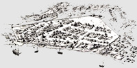
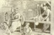

by
Stefan Bielinski
 Among the most often-asked questions about early Albany relate to the community economy, its business, or how this early American city actually worked! This basic yet complex part of the early Albany story is at the heart of the inquiry of the Colonial Albany Social History Project. We think about the community economy virtually every day! This page begins to address the concept and provides basic access to what we have found and think we understand. It is very much in-progress!
Generally, the community economy is a term of convenience describing how the associated people of a particular place provided for themselves, produced and marketed products to gain access to external goods and services, and made their community an attractive destination for new customers and new community members.
Again for convenience, we can divide the community economy into three basic elements. These are defined as commerce, production, and service. Without much difficulty, most economic activities can be grouped under these three headings.
The Commercial Economy: At the top of the pyramid are the community's buyers and sellers.  These business people were called merchants, traders, vendors, and contractors. In control of Albany's municipal government, they were able to structure the flow of goods and services in and out of the community. In the process, they employed members of the production and service economies. In early Albany, these descendants of the fur traders invested profits in land and sold country products and imported items to the settlers of an expanding countryside. Sometimes they owned mills, processing facilities, storehouses, and ships. Some of these businessmen had direct connections to overseas markets and resources. Those who offered manufactured and finely crafted goods from Europe and more exotic spices, foods, and fabrics were often called import merchants. But most Albany merchants were more closely tied to the business community in New York City. It was in their interest to take charge of community development. They were early Albany's city fathers. These elite citizens ranked in the top quarter of the community's wealth with the real power brokers in the top 5%. Merchants included native sons as well as talented and ambitious newcomers.
These business people were called merchants, traders, vendors, and contractors. In control of Albany's municipal government, they were able to structure the flow of goods and services in and out of the community. In the process, they employed members of the production and service economies. In early Albany, these descendants of the fur traders invested profits in land and sold country products and imported items to the settlers of an expanding countryside. Sometimes they owned mills, processing facilities, storehouses, and ships. Some of these businessmen had direct connections to overseas markets and resources. Those who offered manufactured and finely crafted goods from Europe and more exotic spices, foods, and fabrics were often called import merchants. But most Albany merchants were more closely tied to the business community in New York City. It was in their interest to take charge of community development. They were early Albany's city fathers. These elite citizens ranked in the top quarter of the community's wealth with the real power brokers in the top 5%. Merchants included native sons as well as talented and ambitious newcomers.
At the same time, those identified
with trade and business accounted for a sizable percentage of the city's
occupational array. In 1756, the British
army labeled 48 out of 329 Albany principals as a "merchant" (ten more
were called "Indian traders") - thus accounting for almost fifteen percent
of the heads of households. During the 1760s, groups of Albany merchants
sent petitions to the royal government. Such lists
provide a baseline for comprehending the size of the Albany business community.
Because their business involved
the selling and buying of goods, products, and produce, shop and store
keepers and also grocers are included but on the
bottom of the commercial or business economy.
Victualer is a term occasionally encountered in the community-based record. At this point, its Albany context has not yielded specifics regarding its precise definition. The term has been used to identify sellers and suppliers of various items ranging from alcohol products to military and naval supplies. It may describe high-end merchants to common peddlers. See James Cassidy
 The
Production Economy: These were the community's makers
and fixers. For most of the eighteenth century, the artisans and tradesmen
constituted the largest part of the community economy. They varied widely
in terms of their wealth. Many owned their own homes, shops, and storage
facilities. Others rented a room in someone's house. For many, their goal
was to move up to the commercial class! Although numerous, their numbers
were eroded by the importation of manufactured goods from the European
Industrial Revolution.
The
Production Economy: These were the community's makers
and fixers. For most of the eighteenth century, the artisans and tradesmen
constituted the largest part of the community economy. They varied widely
in terms of their wealth. Many owned their own homes, shops, and storage
facilities. Others rented a room in someone's house. For many, their goal
was to move up to the commercial class! Although numerous, their numbers
were eroded by the importation of manufactured goods from the European
Industrial Revolution.
Food production (including brewing and baking) can be considered a distinct part of the production economy.
The Service Economy: Includes all transporters, those providing food and lodging, storage and docking facilities, professional (legal and medical) and human services. Those who derived their livelihood from service to/of government, the courts, or religion also can be considered in this sector.
Family or Domestic Economy: Refers to those goods and services produced within a household to subsist and empower household members. This work usually involved spouses and dependents and took place within the home.
"Provided for" means fed, clothed, and sheltered their families and found ways to support or enable those basic, subsistence activities. Survival (rather than profit) is the goal of subsistence activities!
Grocers sold fresh food products. By the end of the eighteenth century, they were licensed by the Albany Council and some lists of licensees appear in the city records. The first city directory in 1813, listed grocers on virtually every page - a total of at least 120 individuals with addresses spread around the city but mostly beyond the central core. Unlike the 27 shopkeepers whose shops (some services but more often preparation and repair places) and the 91 storekeepers (sales) were separate from their residences, most grocers were not listed with multiple addresses.
The more I learn about the community economy,
the less I know that I know,
and the more certain I am that this is indeed a work-in-progress.
Home | Site Index | Navigation | Email | New York State Museum
online 5/1/02; last updated 2/12/15